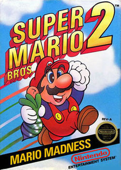
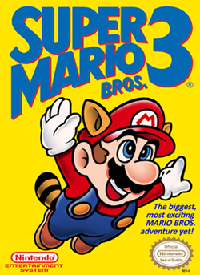

NES

Release Date: September 13, 1985
Super Mario Bros was the first game in the series. While it was not Mario's first appearance in a game it was his first adventure really centered on him. The game is a sidescrolling platformer where the objective is to complete each level to get closer to Bowser's castle and save the Princess. Luigi is only playable by a second player. Two players cannot play at the same time. They instead will switch turns when a player either completes a level or dies. There are coins to collect in each level and there will be blocks with question marks that contain powerups. These fundamentals have been kept in every Mario game to date. This game not only set the stge for other Mario games, but also thousands of other games that came after it. The game was a huge success and is the second best selling game of all-time at around 40 million copies(including re-releases).
Release Date: September 1, 1988
Super Mario Bros 2 was interesting as it changed the visual style from the first game. It also introduced a health meter as opposed to the health system from the first game. Also in big change the player can choose from 4 characters to play as Mario, Luigi, Peach, and Toad. They all have different abilities which allowed for slightly different ways to play the game. Another bg change is jumping on enemies didn't kill them. All enmies in the game have to b hit with a thrown object. Despite all the changes the game was well received by the public and sold very well.
Release Date: Feburary 12, 1990
Super Mario Bros 3 returns back to what the first game did in gameplay style. However while it played similar the game improved on and made everything better. The game swas released towards the end of the NES's lifesapn, but would get re-released on other platforms later and was still well received.